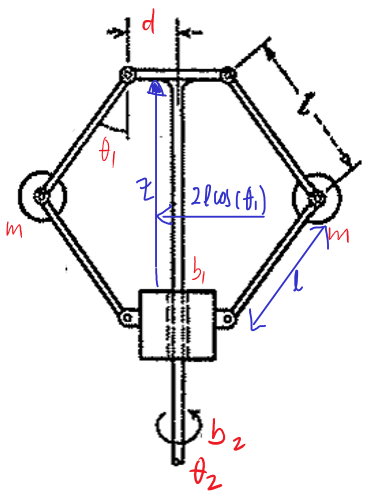
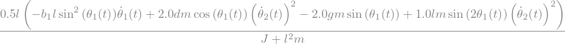
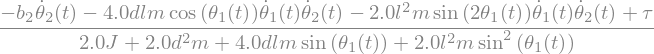

from IPython.display import HTML
import numpy as np
import matplotlib.pyplot as plt
plt.rcParams.update({
"text.usetex": True,
"font.family": "Helvetica",
"font.size": 10,
})
from sympy import *
from mathprint import *
# https://stackoverflow.com/questions/49145059/how-to-change-printed-representation-of-functions-derivative-in-sympy
latexReplaceRules = {
# r'{\left(t \right)}':r' ',
r'\frac{d}{d t}':r'\dot',
r'\frac{d^{2}}{d t^{2}}':r'\ddot',
}
def latexNew(expr,**kwargs):
retStr = latex(expr,**kwargs)
for _,__ in latexReplaceRules.items():
retStr = retStr.replace(_,__)
return retStr
init_printing(use_unicode=False)
init_printing(latex_printer=latexNew)
t = symbols('t', real=True)
theta1 = Function('theta1')
theta2 = Function('theta2')
tau = symbols('tau', real=True)
J, m, l, d, g, b1, b2 = symbols('J m l d g b1 b2', real=True, nonnegative=True)

Let uas consier are two motions that contribute to kinetic energy:
upward-downward rotations around \(\theta_1\) \(\rightarrow T_1\)
planar continous rotations around \(\theta_2\) \(\rightarrow T_2\)
We use parallel axis theorem to compute the get the correct momen of inertia about the given rotation axis.
T1 = simplify( 2*1/2*(J+m*l**2)*diff(theta1(t) ,t)**2 )
T2 = simplify( 2*1/2*(J+m*(l*sin(theta1(t))+d)**2)*diff(theta2(t) ,t)**2 )
mprint('T_1=' + latexNew(T1))
mprint('T_2=' + latexNew(T2))
\[\displaystyle T_1=1.0 \left(J + l^{2} m\right) \left(\dot \theta_{1}{\left(t \right)}\right)^{2}\]
\[\displaystyle T_2=1.0 \left(J + m \left(d + l \sin{\left(\theta_{1}{\left(t \right)} \right)}\right)^{2}\right) \left(\dot \theta_{2}{\left(t \right)}\right)^{2}\]
V = 2*m*g*l*(1-cos(theta1(t)))
mprint('V=' + latexNew(V))
\[\displaystyle V=2 g l m \left(1 - \cos{\left(\theta_{1}{\left(t \right)} \right)}\right)\]
We introudce two damping elements that cause energy lost:
\(R_1\): dissipation by the linear bushing moving along the vertical rod.
\(R_2\): dissipation by the rotating vertical rod.
z = l-l*cos(theta1(t))
zdot = diff(z, t)
R1 = 1/2*b1*zdot**2
R2 = 1/2*b2*diff(theta2(t))**2
mprint('R_1=' + latexNew(R1))
mprint('R_2=' + latexNew(R2))
\[\displaystyle R_1=0.5 b_{1} l^{2} \sin^{2}{\left(\theta_{1}{\left(t \right)} \right)} \left(\dot \theta_{1}{\left(t \right)}\right)^{2}\]
\[\displaystyle R_2=0.5 b_{2} \left(\dot \theta_{2}{\left(t \right)}\right)^{2}\]
T = T1 + T2 # Total kinetic energy
L = T - V # The Lagrangian
dL_dTh = Matrix([diff(L, theta1(t)), diff(L, theta2(t))])
mprint('\\frac{dL}{d\\theta}=' + latexNew(dL_dTh))
\[\begin{split}\displaystyle \frac{dL}{d\theta}=\left[\begin{matrix}- 2 g l m \sin{\left(\theta_{1}{\left(t \right)} \right)} + 2.0 l m \left(d + l \sin{\left(\theta_{1}{\left(t \right)} \right)}\right) \cos{\left(\theta_{1}{\left(t \right)} \right)} \left(\dot \theta_{2}{\left(t \right)}\right)^{2}\\0\end{matrix}\right]\end{split}\]
dL_dThdot = simplify(Matrix([diff(L, diff(theta1(t), t)), diff(L, diff(theta2(t), t))]))
mprint('\\frac{dL}{d\\dot{\\theta}}=' + latexNew(dL_dThdot) )
\[\begin{split}\displaystyle \frac{dL}{d\dot{\theta}}=\left[\begin{matrix}2.0 \left(J + l^{2} m\right) \dot \theta_{1}{\left(t \right)}\\2.0 \left(J + m \left(d + l \sin{\left(\theta_{1}{\left(t \right)} \right)}\right)^{2}\right) \dot \theta_{2}{\left(t \right)}\end{matrix}\right]\end{split}\]
dR1_dThdot = simplify(Matrix([diff(R1, diff(theta1(t), t)), diff(R1, diff(theta2(t), t))]))
mprint('\\frac{dR_1}{d\\dot{\\theta}}=' + latexNew(dR1_dThdot) )
\[\begin{split}\displaystyle \frac{dR_1}{d\dot{\theta}}=\left[\begin{matrix}1.0 b_{1} l^{2} \sin^{2}{\left(\theta_{1}{\left(t \right)} \right)} \dot \theta_{1}{\left(t \right)}\\0\end{matrix}\right]\end{split}\]
dR2_dThdot = simplify(Matrix([diff(R2, diff(theta1(t), t)), diff(R2, diff(theta2(t), t))]))
mprint('\\frac{dR_2}{d\\dot{\\theta}}=' + latexNew(dR2_dThdot) )
\[\begin{split}\displaystyle \frac{dR_2}{d\dot{\theta}}=\left[\begin{matrix}0\\1.0 b_{2} \dot \theta_{2}{\left(t \right)}\end{matrix}\right]\end{split}\]
dL_dThdot_dt = simplify(Matrix([diff(diff(L, diff(theta1(t), t)),t) , diff(diff(L, diff(theta2(t), t)), t)]))
mprint('\\frac{dL}{d\\dot{\\theta} dt}=' + latexNew(dL_dThdot_dt) )
\[\begin{split}\displaystyle \frac{dL}{d\dot{\theta} dt}=\left[\begin{matrix}2.0 \left(J + l^{2} m\right) \ddot \theta_{1}{\left(t \right)}\\4.0 l m \left(d + l \sin{\left(\theta_{1}{\left(t \right)} \right)}\right) \cos{\left(\theta_{1}{\left(t \right)} \right)} \dot \theta_{1}{\left(t \right)} \dot \theta_{2}{\left(t \right)} + 2.0 \left(J + m \left(d + l \sin{\left(\theta_{1}{\left(t \right)} \right)}\right)^{2}\right) \ddot \theta_{2}{\left(t \right)}\end{matrix}\right]\end{split}\]
eq = simplify(dL_dThdot_dt - dL_dTh + dR1_dThdot + dR2_dThdot)
mprint('\\frac{dL}{d\\dot{\\theta} dt} - \\frac{dL}{d\\theta} + \\frac{dR_1}{d\\dot{\\theta}} + \\frac{dL}{d\\dot{\\theta} dt}=' + latexNew(eq) )
\[\begin{split}\displaystyle \frac{dL}{d\dot{\theta} dt} - \frac{dL}{d\theta} + \frac{dR_1}{d\dot{\theta}} + \frac{dL}{d\dot{\theta} dt}=\left[\begin{matrix}1.0 b_{1} l^{2} \sin^{2}{\left(\theta_{1}{\left(t \right)} \right)} \dot \theta_{1}{\left(t \right)} + 2 g l m \sin{\left(\theta_{1}{\left(t \right)} \right)} - 2.0 l m \left(d + l \sin{\left(\theta_{1}{\left(t \right)} \right)}\right) \cos{\left(\theta_{1}{\left(t \right)} \right)} \left(\dot \theta_{2}{\left(t \right)}\right)^{2} + 2.0 \left(J + l^{2} m\right) \ddot \theta_{1}{\left(t \right)}\\1.0 b_{2} \dot \theta_{2}{\left(t \right)} + 4.0 l m \left(d + l \sin{\left(\theta_{1}{\left(t \right)} \right)}\right) \cos{\left(\theta_{1}{\left(t \right)} \right)} \dot \theta_{1}{\left(t \right)} \dot \theta_{2}{\left(t \right)} + 2.0 \left(J + m \left(d + l \sin{\left(\theta_{1}{\left(t \right)} \right)}\right)^{2}\right) \ddot \theta_{2}{\left(t \right)}\end{matrix}\right]\end{split}\]
eqs = Eq(eq, Matrix([0 , tau]))
odes = solve(eqs, [diff(theta1(t), t, t), diff(theta2(t), t, t)])
simplify(odes[diff(theta1(t), t, t)])

simplify(odes[diff(theta2(t), t, t)])
